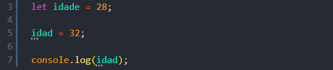

Use Strict
Intro
Nos permite achar ou identificar ou achar erros em nosso codigo.
Nos permite achar ou identificar ou achar erros em nosso codigo.
Para podermos estarmos identificando erros em nosso codigo, podemos ir no topo de nosso arquivo JS e escrever 'use strict';
Se acabarmos criando uma variavel da seguinte forma:

'use strict'; assim que usado ele ja ira identifcar o erro e nos forncecer em nosso console